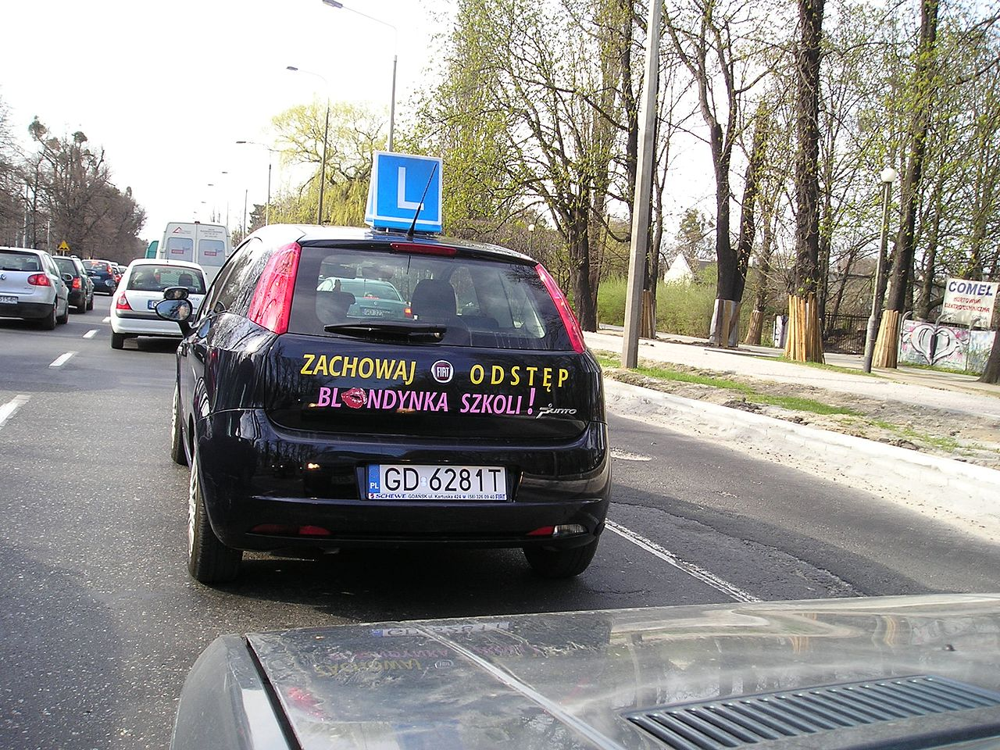
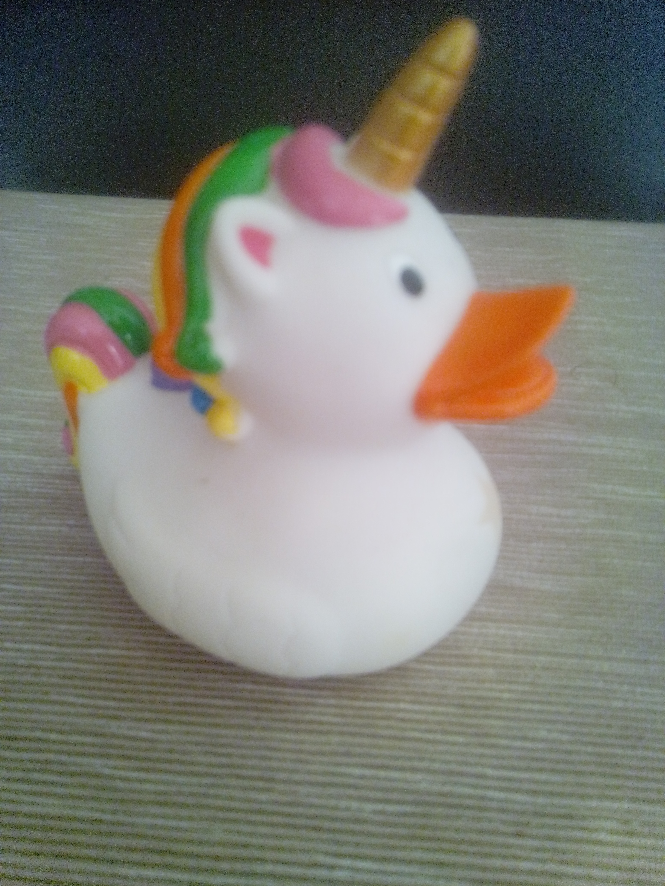

Java/Kotlin Developer
Analfabetyzm
w rozumieniu potocznym, brak umiejętności pisania i czytania oraz wykonywania czterech podstawowych działań matematycznych u osób dorosłych
Analfabetyzm rodzaje
Edukacja
ogół procesów i oddziaływań,
których celem jest
zmienianie ludzi,
przede wszystkim
dzieci i młodzieży,
stosownie do panujących
w danym społeczeństwie
ideałów i celów wychowawczych
Prusy, przełom XVIII i XIX wieku
Wprowadzono państwową powszechną edukację
Choroby zakaźne przenoszone były przez złe powietrze
Białogłowy powinny słuchać ojca, męża i rodzić dzieci
Agenda
Stosowanie:
Dobre do nauki:
Uwagi:
Gdzy masz limit czasu:

By LukaszKatlewa - Praca własna, CC BY 3.0, Link
Co wybrać jak masz limit czasu (40 godzin):
Dobre do nauki:
Uwagi:
Histora powstania
Symonides z Keos
By Silver Diner - Own work, CC BY-SA 3.0, LinkJak to działa?:
"Mały Książę" na stoliku nocnym
Praktyka
Dobre do nauki:
Uwagi:
Ułożenie i rozbicie
trudnych pojęć na mniejsze
od ogółu do szczegółu
Uwagi:
Jak to?!
Jak zacząć:
Uwagi:
Technika mówienia, opowiadania, tłumaczenia
Mam mówić do kaczki?
Czy to musi być kaczka
NIE
Jednorożec

Uwagi: